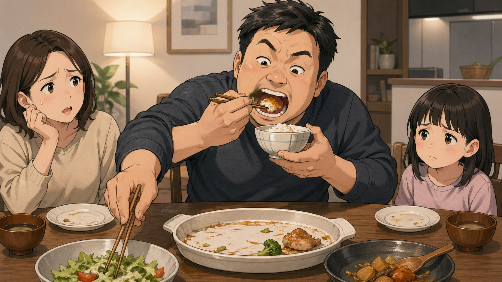

「食い尽くし系夫」から考える

近年、日本では「食い尽くし系夫」という言葉が話題になることがあります。
これは、単に「よく食べる夫」や「大食いの人」を批判する言葉ではありません。問題にされているのは、妻や子どもの分まで考えず、家族全員のために用意された食べ物を一人で食べ尽くしてしまう夫のことです。
たとえば、家族で分けるはずだったおかずを一人で食べてしまう。子どものために残していた料理まで食べてしまう。妻が後で食べようと思っていた分を、断りもなく食べてしまう。注意されても、「残っていたから食べただけ」「早く食べない方が悪い」と正当化する。
このような行動は、ただの食欲の問題ではありません。そこには、他の人の必要を考えないこと、自分の欲求を抑えられないこと、家族への配慮が欠けていることが表れています。
大食いそのものが悪いのではない
まず、はっきり区別しておきたい点があります。
たくさん食べること自体が悪いわけではありません。体格が大きい人、よく働く人、若くて食欲がある人が多く食べるのは自然なことです。
問題は、自分がたくさん食べることではなく、他の人の分まで奪うように食べてしまうことです。
家族の食卓には、暗黙の配慮があります。
「これはみんなで分けるもの」
「子どもはまだ食べていない」
「妻は後で食べる予定かもしれない」
「自分が全部食べたら、誰かが困る」
普通であれば、こうしたことを考えながら食べます。しかし「食い尽くし系夫」と呼ばれる人は、この配慮が極端に弱い場合があります。
つまり問題の本質は、胃袋の大きさではなく、思いやりと自制心の不足です。
「ケーキを等分できない非行少年」との共通点
この問題は、「ケーキを等分することができない非行少年」という話とも関係があるように思えます。
ケーキを等分するには、単に包丁で切る技術だけでなく、いくつかの力が必要です。
全体を見る力。
人数を意識する力。
公平に分ける感覚。
他の人の取り分を考える力。
自分だけ得をしようとしない心。
つまり、ケーキを等分できないという問題は、単なる図形や算数の問題ではありません。そこには、全体を見て、他者の存在を考え、自分の行動を調整する力が関係しています。
「食い尽くし系夫」も、これに似ています。
食卓にある料理を見たとき、
「これは自分だけのものではない」
「家族全員の分だ」
「自分が食べ過ぎると、誰かが食べられなくなる」
と考える必要があります。
それができないなら、ケーキを公平に分けられない問題と同じように、配分の感覚や他者への想像力が弱いと言えるかもしれません。
聖書に出てくる「大食いの者」
聖書にも、「大食い」という表現が出てきます。
申命記 21章18-21節には、次のような律法があります。
ある人に頑固で反抗的な息子がいて，息子が父親にも母親にも従わず，両親が正そうとしても言うことを聞かない場合，父親と母親は息子を町の長老たちの所へ連れて行き，こう言います。
「この息子は頑固で反抗的で，私たちに従おうとしません。大食いで，いつも酔っぱらっています」。
こうしてイスラエルの中から悪を除き去らなければならない。
この聖句を読むと、「大食い」という言葉がかなり厳しい文脈で使われていることが分かります。
ただし、ここでも「よく食べる若者」が問題にされているのではありません。この息子は、まず「頑固で反抗的」と言われています。父親にも母親にも従わず、正そうとしても聞きません。そのうえで、「大食いで、いつも酔っぱらっている」と述べられています。
つまり、この「大食い」は、単なる食欲の強さではなく、自制心を失い、親の忠告を退け、欲望に支配された生き方を表していると考えられます。
「大食い」と「酔っぱらい」が並んでいる意味
申命記 21章では、「大食い」と「酔っぱらい」が並んでいます。
これは興味深い点です。どちらも、欲望を制御できない状態を表しています。
食べたいから食べる。
飲みたいから飲む。
止められても聞かない。
家族が困っても気にしない。
自分の快楽が最優先になる。
このような態度は、家庭を壊します。
聖書が問題にしているのは、食べ物やお酒そのものではありません。問題は、欲望がその人を支配し、家族や周囲の人を傷つけることです。
ですから、申命記 21章の「大食いの者」は、現代の「食い尽くし系夫」の問題を考えるうえで、とても示唆的です。
家族の分まで食べることは、愛の欠如である
家族の中で、自分だけ満腹になり、妻や子どもの分を奪ってしまう。これは小さな問題に見えるかもしれません。
しかし、食べ物は生活の基本です。食事は、家族が安心して暮らすための大切な部分です。
その食事の場で、夫が自分の欲求だけを優先するなら、妻や子どもは傷つきます。
「私たちのことを考えてくれていない」
「子どもの分まで食べるのか」
「この人と一緒に暮らしていて大丈夫なのか」
そう感じるのは当然です。
聖書的に見ても、夫には家族を大切にする責任があります。妻や子どもを守り、必要を顧みるべき立場にあります。
それなのに、家族の分まで食べ尽くすなら、それは単なる食欲ではなく、家族への愛と責任感の欠如と言えるでしょう。
注意されても改めないことが深刻
「食い尽くし系夫」の問題で特に深刻なのは、注意されても改めない場合です。
一度だけなら、うっかりかもしれません。空腹で判断が鈍ったのかもしれません。家族の分だと気づかなかったのかもしれません。
しかし、何度も同じことを繰り返し、注意されても反省しないなら、問題は深くなります。
申命記 21章の息子も、単に失敗した若者ではありません。「両親が正そうとしても言うことを聞かない」とあります。
つまり問題は、行動そのものだけでなく、正されても変わろうとしない心にあります。
現代の家庭でも同じです。
「子どもの分まで食べないで」
「これは明日の弁当用だから残しておいて」
「家族で分けるものだから、一人で食べないで」
こう言われても無視する。逆ギレする。笑ってごまかす。「そんなことで怒るな」と相手を責める。
そのような態度は、聖書的に見ても非常に問題があります。
自制心は愛の一部
愛とは、感情だけではありません。愛には、自制心が含まれます。
自分が食べたいと思っても、家族の分を残す。
自分が得をしたくても、公平に分ける。
自分の欲求より、弱い立場の人を優先する。
これが愛です。
逆に言えば、自制心がない人は、周囲の人を傷つけやすくなります。
特に家庭では、子どもや妻など、身近な人ほど被害を受けます。外では礼儀正しくしていても、家庭内で自分勝手に振る舞うなら、それは本当の意味で愛があるとは言えません。
「食い尽くし系夫」の問題は、食卓の小さな出来事に見えて、実際にはその人の内面を表します。
自分中心の考え方
他者への想像力の不足
欲望を抑える力の弱さ
家族を軽く見る態度
が表れている可能性があります。
聖書は「分け合う心」を重んじている
聖書全体を見ると、神は弱い立場の人への配慮を重んじておられます。
貧しい人、孤児、やもめ、外国人など、社会的に弱い立場にある人を顧みるよう繰り返し教えています。
家庭の中でも同じです。夫が強い立場にあるなら、その力を自分のために使うのではなく、家族を守るために使うべきです。
食べ物を分けることは、とても基本的な愛の表現です。
家族の分を残す。
子どもに先に食べさせる。
妻の疲れを考える。
自分だけでなく、みんなが満たされるようにする。
こうした小さな配慮が、家庭の安心感を作ります。
「食い尽くし系夫」は笑い話ではない
インターネットでは、「食い尽くし系夫」という言葉が面白おかしく使われることもあります。しかし、実際に家庭内でこの問題が起きているなら、笑い話ではありません。
妻や子どもにとっては、毎日の生活の安心が壊されるからです。
冷蔵庫に入れておいたものがなくなる。
子どもの分が食べられてしまう。
何度言っても直らない。
自分の怒りが「細かいこと」と扱われる。
これは、かなり大きなストレスになります。
食べ物の問題に見えて、実際には、
信頼の問題
尊重の問題
家庭内の安全感の問題
です。
まとめ
「食い尽くし系夫」の問題は、単なる大食いの話ではありません。
大切なのは、
家族の分を考えられるか
他の人の必要を想像できるか
自分の欲求を抑えられるか
注意されたときに謙遜に改められるか
という点です。
申命記 21章18-21節に出てくる「大食いの者」も、単にたくさん食べる人ではなく、頑固で反抗的で、正されても聞かず、欲望に支配された人として描かれています。
その意味で、この聖句は現代の「食い尽くし系夫」の問題を考えるうえで、とても重い教訓を与えています。
家族の食卓は、愛と配慮が表れる場所です。そこで自分だけを優先するなら、家庭の信頼は壊れていきます。
逆に、食べ物を分け合い、他の人の分を考え、自分の欲求を抑えるなら、そこには愛があります。
聖書が教えているのは、ただ食欲を抑えることではありません。自分中心の生き方をやめ、家族や周囲の人を大切にすることです。